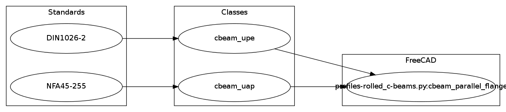

<div class="page-title-bar">
  <div class="inner-content">
    <h2>{{ page.title }}</h2>
  </div>
</div>

<div id="content">
  <div class="inner-content">
    by <a href='mailto:bernd@bimstatik.org'>Bernd Hahnebach</a><br>
    under <a href='http://www.gnu.org/licenses/lgpl-2.1'>LGPL 2.1+</a><br>
    collection-id profiles-rolled_c-beams<br>
  </div>

  <div class="inner-content">
    <h1>Description</h1>
    various rolled c-beam profiles
  </div>

  <div class="inner-content">
    <h1>Specifications</h1>
    <table class="table">
      <tr><th>Name</th> <th>Description</th> <th>Status</th><tr>
<tr class='active'><td><a href='../classes/DIN1026-2.html'>DIN1026-2</a></td> <td>UPE profile, metric european standard c-beam profile</td> <td>active</td></tr>
<tr class='active'><td><a href='../classes/NFA45-255.html'>NFA45-255</a></td> <td>UAP profile, metric european standard c-beam profile</td> <td>active</td></tr>
    </table>
  </div>

  <div class="inner-content">
    <h1>Diagram</h1>
    <table class="table">
      </img>
    </table>
  </div>

</div>
